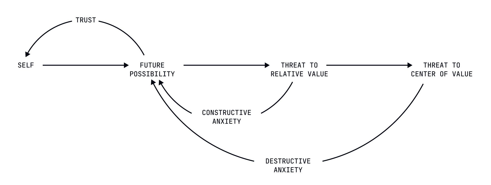
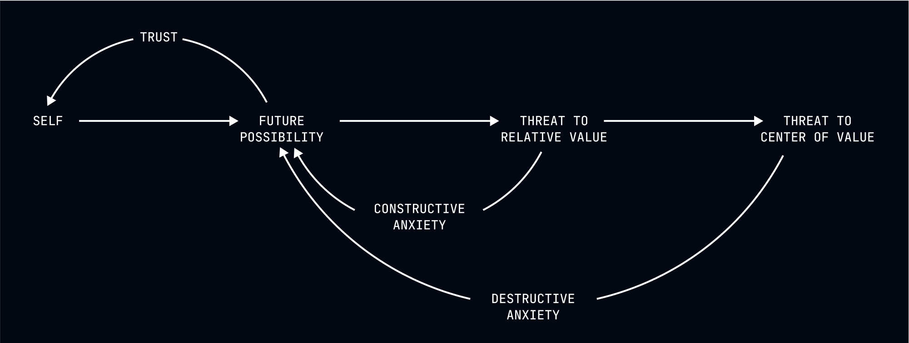

What Anxiety Is Trying to Tell You
A lack of control can make you anxious, but realize this has no bearing on outcomes.


The Uncomfortable Truth
You've likely experienced anxiety as an unwelcome intruder—a painful emotional state that disrupts your peace and interferes with your functioning. You've probably tried various techniques to eliminate or reduce this anxiety, viewing it as a problem to be solved rather than information to be understood.
This approach misses something fundamental: anxiety isn't a malfunction but a message. It's your nervous system accurately informing you about your actual condition in the universe. The discomfort of anxiety isn't a bug in your programming but a feature—a signal trying to communicate an uncomfortable truth you'd rather not face.
That truth is simple: you lack control over most of what matters to you.
Anxiety as Accurate Information
From a deterministic perspective, anxiety isn't irrational or disordered (in most cases). It's your nervous system accurately recognizing and reporting on your actual condition: you are a small, vulnerable organism in an indifferent universe, unable to control most of the factors that will determine your fate.
When you worry about a medical test result, your anxiety isn't a psychological problem—it's an accurate recognition that your health and survival depend on factors largely outside your control. When you feel anxious before an important presentation, your nervous system isn't malfunctioning—it's correctly identifying that outcomes important to your social standing and security will be determined by factors you can't control.
The discomfort of anxiety stems not from its inaccuracy but from its precision—it's telling you exactly what you don't want to know about your actual condition.
The Futility of Control-Based Responses
The conventional approach to anxiety focuses on regaining a sense of control—through preparation, reassurance, distraction, or medication. These approaches assume the problem is the anxiety itself rather than the lack of control it's accurately reporting on.
This misunderstanding leads to an endless cycle: you feel anxious about your lack of control, attempt to regain a sense of control, experience temporary relief, then feel anxious again when reality inevitably reminds you of your actual condition. This cycle isn't a failure of anxiety management but the inevitable result of trying to solve an accurate perception by replacing it with an inaccurate one.
The person who feels anxious about a job interview isn't experiencing a psychological problem to be fixed. They're accurately recognizing that their professional future depends on factors largely outside their control—the predetermined judgments of others, the qualifications of other candidates, the specific questions asked, and countless other variables they can't influence.
Deterministic Approaches to Anxiety
From a deterministic perspective, the goal isn't to eliminate anxiety (which would mean ignoring accurate information) or to regain a sense of control (which would mean embracing a fiction). The goal is to develop a more sophisticated relationship with the accurate message anxiety is delivering.
1. From Problem to Information
Rather than viewing anxiety as a malfunction to be fixed, recognize it as information to be understood. When anxiety arises, ask: "What is this feeling accurately telling me about my actual condition in the universe?"
The answer is almost always some version of: "Important outcomes in my life will be determined by factors I can't control." This recognition doesn't eliminate the anxiety but transforms your relationship with it from resistance to understanding.
2. From Control to Acceptance
Instead of responding to anxiety by trying to regain a sense of control (which perpetuates the illusion that control is possible), respond by accepting the actual limits of your influence. This isn't resignation but recognition of how reality actually operates.
When anxious about a medical diagnosis, don't focus exclusively on what you can control (which maintains the fiction that control is what matters). Recognize that while you can take predetermined actions, the outcome will be determined by factors largely outside your influence. This acceptance doesn't change the outcome (nothing could) but prevents the additional suffering that comes from believing you should be able to control what happens.
3. From Elimination to Coexistence
Rather than trying to eliminate anxiety (which would mean ignoring accurate information about your condition), learn to coexist with it as a persistent feature of being a conscious organism in an uncontrollable universe.
This coexistence doesn't mean suffering. It means allowing anxiety to deliver its message without adding the secondary suffering of believing the anxiety shouldn't be there or that its presence means something is wrong with you. The anxiety is doing exactly what it evolved to do: alerting you to your vulnerability in an unpredictable environment.
Practical Techniques for Deterministic Anxiety Management
The Accuracy Acknowledgment Practice
When experiencing anxiety, explicitly acknowledge the accuracy of its core message:
"This anxiety is accurately informing me that I can't control the outcome of this situation." "My nervous system is correctly recognizing my vulnerability in this circumstance." "This discomfort is precisely what I should feel given my actual condition of limited influence."
This acknowledgment doesn't eliminate the anxiety but prevents the additional suffering that comes from believing it shouldn't be there. The person who recognizes their pre-interview anxiety as accurate information about their limited control doesn't necessarily feel less anxious, but they stop adding the secondary suffering of believing something is wrong with them for feeling anxious.
The Influence Inventory
When anxiety arises about a specific situation, inventory the factors that will determine the outcome, distinguishing between:
- Factors you can influence (though not control)
- Factors entirely outside your influence
- Factors you aren't even aware of
This inventory doesn't increase your control (impossible) but clarifies the actual limits of your influence. The person anxious about a job interview who recognizes that 90% of the factors determining the outcome are outside their influence isn't choosing to care less (their caring is equally determined) but is aligning their understanding with reality.
The Predetermined Action Identification
Identify the actions your predetermined nature will inevitably take in response to the situation, regardless of your anxiety:
- What preparations will you inevitably make given your specific programming?
- What responses will automatically emerge from your particular system?
- What adaptations will your predetermined nature inevitably generate?
This identification doesn't create choice about these actions (they're determined) but clarifies that they'll occur regardless of your anxiety state. The anxious student will still study according to their predetermined patterns whether they're consumed by anxiety or have a more sophisticated relationship with it. This recognition often allows the predetermined actions to emerge with less interference from anxiety-about-anxiety.
The Anxiety Externalization Dialogue
Engage in a dialogue with your anxiety as if it were a separate entity trying to deliver an important message:
"What are you trying to tell me about my actual condition?" "What vulnerability are you accurately identifying?" "What illusion of control are you correctly challenging?"
This dialogue doesn't create choice about whether to feel anxious (impossible) but often reveals the specific aspects of uncontrollability that your nervous system is accurately identifying. The person who discovers their anxiety is specifically highlighting their dependence on others' judgments isn't choosing to care less about these judgments (their values are determined) but is recognizing the precise nature of their vulnerability.
Case Study: The Medical Uncertainty
Consider Sarah, who experienced intense anxiety while awaiting results from medical tests. From a free will perspective, Sarah needed to manage her anxiety through distraction, positive thinking, or medication. From a deterministic perspective, Sarah's anxiety was accurately informing her about her actual condition: her health and potentially her survival depended on factors entirely outside her control.
After practicing deterministic anxiety approaches, Sarah didn't experience less physiological anxiety (her nervous system was functioning as designed). But she developed a more sophisticated relationship with this anxiety. She recognized it was accurately reporting on her vulnerability in an unpredictable universe, not a psychological problem to be solved.
This recognition didn't change the medical outcome (nothing could) but prevented the additional suffering that came from believing she shouldn't feel anxious or that her anxiety was somehow influencing the results. Sarah's predetermined actions—researching her condition, preparing questions for her doctor, arranging support—emerged more efficiently without the interference of anxiety-about-anxiety.
When the results eventually arrived (negative, in this case), Sarah didn't attribute this outcome to her anxiety management techniques. She recognized it as the result of causal factors entirely separate from her emotional state. This understanding didn't prevent relief (her emotional responses were equally determined) but prevented the dangerous misattribution that her anxiety level had somehow influenced the medical reality.
The Paradoxical Benefits of Anxiety Acceptance
Perhaps the most counterintuitive aspect of deterministic anxiety management is how accepting anxiety as accurate information can reduce its interference with functioning. By recognizing that anxiety is correctly reporting on your lack of control rather than a problem to be solved, you create conditions where your predetermined actions can emerge with less resistance.
The person who accepts their pre-performance anxiety as an accurate report on their vulnerability performs their predetermined actions more efficiently than the person expending energy trying to eliminate the anxiety or pretending they have more control than they do. This isn't choosing different actions (impossible) but removing the interference that comes from fighting against accurate information.
The Liberation of Recognized Vulnerability
There's a profound liberation in recognizing that anxiety is often accurately reporting on your actual condition of vulnerability and limited control. This recognition doesn't create comfort in the conventional sense—it doesn't pretend the world is safer or more controllable than it is. But it offers the deeper comfort of alignment with reality rather than delusion.
The person who understands their anxiety as accurate information stops adding the secondary suffering of believing something is wrong with them for feeling anxious. They recognize that anxiety is doing exactly what it evolved to do: alerting them to their vulnerability in an unpredictable environment where important outcomes are determined by factors they can't control.
This recognition doesn't create choice about whether to feel anxious (impossible) but transforms the experience of inevitable anxiety from a psychological problem to an accurate perception of reality. The anxiety may remain, but the suffering that comes from believing it shouldn't be there or that its presence means something is wrong with you can dissolve.
Anxiety Without Suffering
It's crucial to distinguish between primary anxiety (the physiological response to recognized vulnerability) and secondary suffering (the additional distress created by believing anxiety is a problem). Deterministic anxiety management doesn't promise to eliminate the former (which would mean ignoring accurate information) but can significantly reduce the latter.
The public speaker who recognizes their racing heart and shallow breathing as accurate reports on their vulnerability doesn't necessarily experience less physiological arousal. But they stop adding the layer of shame, self-criticism, or catastrophizing that transforms normal anxiety into suffering. Their predetermined performance emerges from their system without the interference of anxiety-about-anxiety.
This distinction is particularly important because primary anxiety may be an inevitable feature of being a conscious organism aware of its vulnerability in an unpredictable environment. The goal isn't to eliminate this accurate perception but to prevent it from generating unnecessary additional suffering through misunderstanding.
Next Steps
In our final lesson of this module, "Maintaining a Sense of Self," we'll explore how to reconcile the deterministic understanding that your identity was assigned to you by circumstance with the practical need for a coherent self-concept. We'll examine how recognizing that who you think you are has been determined by factors outside your control can paradoxically create a more stable and functional sense of self.
Remember: You didn't choose to read this lesson, and you won't choose how to relate to your anxiety. But recognizing anxiety as accurate information about your lack of control might inevitably reduce the secondary suffering that comes from misunderstanding its message. Isn't that a curious comfort?